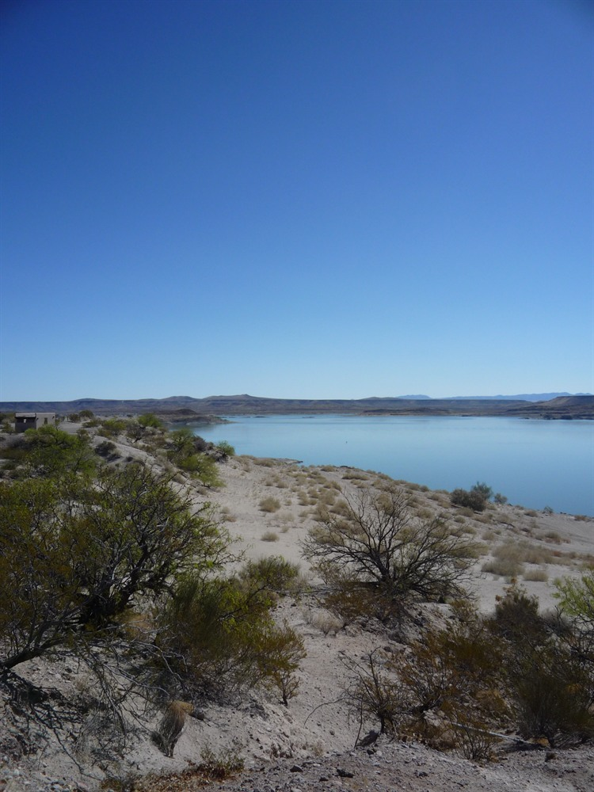
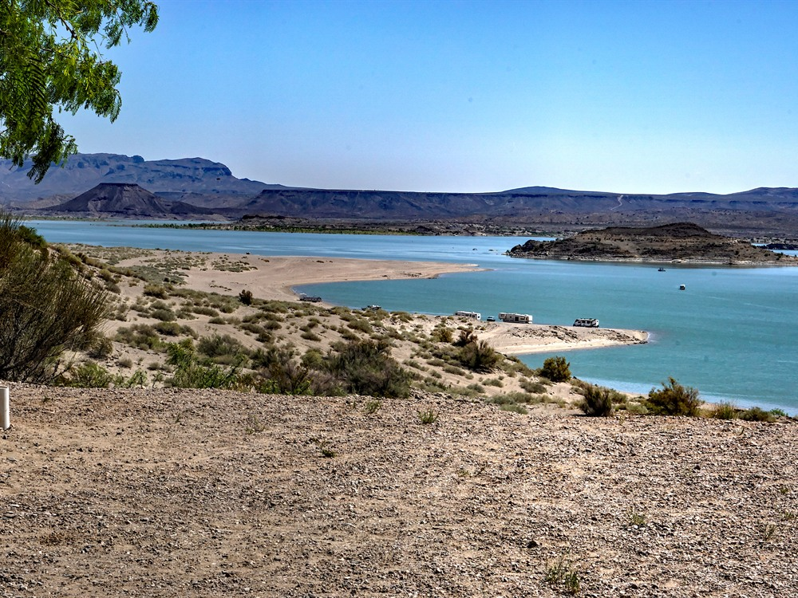
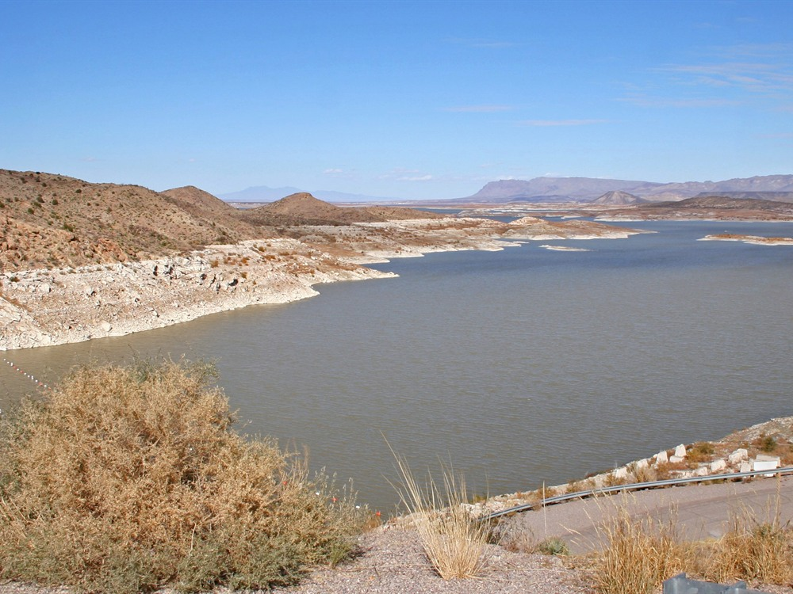

.jpg){kind=link}
Expansive reservoir and recreation area offering year-round opportunities for boating, fishing, camping, and water sports amid desert landscapes.
General Information
Overnight camping available with reservation
Annual Day Use Pass: $75 (residents), $150 (non-residents)
Camping: $10 per night
Annual Camping Pass: $180–$225
How to Get There
From Las Cruces (85 mi): Take I-25 North to Exit 83, turn right onto NM-195, and follow signs to the park entrance and visitor center.
Overview
Elephant Butte Lake State Park is New Mexico's largest state park and its most popular water recreation destination, built around the reservoir created when Elephant Butte Dam was completed on the Rio Grande in 1916. When full, the lake stretches about 40 miles and has more than 200 miles of shoreline, and the park is named for a volcanic plug on the lake that is said to resemble an elephant. The dam was a major engineering project that supplies irrigation water to farms in southern New Mexico, west Texas and northern Mexico. The lake is known for boating, fishing, water-skiing and swimming in the Chihuahuan Desert, and it offers camping, hiking and mountain biking along the shoreline, making it a favorite summer getaway for residents of southern New Mexico and El Paso.
Access
The park is about 5 miles north of Truth or Consequences, off I-25. Take exit 83 and follow NM-195 for several miles to the visitor center and campgrounds. Albuquerque is about 2.25 hours to the north, Las Cruces about 1.25 hours to the south, and Spaceport America is nearby. Nearly all visitors arrive by car on paved roads, and boaters launch from marina ramps and public beaches. The lake is big enough that reaching different beaches and campground areas takes some driving.
Seasons
The park is open year-round, with the busiest season from Memorial Day through Labor Day, when warm weather draws boaters, swimmers and campers. The water level varies considerably from year to year depending on snowpack and drought, so beach and boat ramp access can change. Spring and fall are milder and better for hiking, cycling and fishing, and migrating birds are numerous in cooler months. Winters are mild but can be windy and cold, which makes it a quiet time for camping, and boating services are reduced. The park hosts fireworks and regattas on summer holidays.
Things to Do
Enjoy New Mexico's Biggest Lake
Elephant Butte Lake State Park is the state's top destination for boating, fishing and camping on the water. The lake's size, mild climate and desert backdrop make it a signature outdoor attraction.
Boat, Water-Ski and Paddle
Boat ramps and marinas provide access for powerboats, jet skis, sailboats and paddleboards. Rentals and services are available seasonally, and the large open water offers room for everything from fishing to wakeboarding.
Fish for Bass, Walleye and Catfish
Elephant Butte is one of the best fisheries in the Southwest, with largemouth and striped bass, walleye, catfish and crappie. A New Mexico fishing license is required.
Hike and Bike the Shoreline
More than 15 miles of trails run along the shore, through dunes and up desert hills with lake views. The trail network is popular with hikers, mountain bikers and birdwatchers.
Relax in Truth or Consequences
Just south of the park, the town of Truth or Consequences is known for its natural hot springs bathhouses, art galleries and the Geronimo Springs Museum, making a good addition to a lake trip.
Top Trails
West Lakeshore Trail
Length: Approximately 10 miles
Elevation Gain: Minimal to moderate
Difficulty: Moderate
This long trail follows the western shore of the lake with several trailheads, allowing hikers to choose shorter sections. It offers some of the best views of the lake and Elephant Butte itself.
Luchini Trail
Length: Approximately 1.5 miles
Elevation Gain: Minimal
Difficulty: Easy
This easy trail passes through sand dunes between the visitor center and the campgrounds. It is good for families and for birdwatching.
Paseo del Rio Trail
Length: Approximately 0.75 miles
Elevation Gain: Minimal
Difficulty: Easy
This short walk follows the Rio Grande below the dam, offering a quiet riverside setting and a close look at the river that feeds the reservoir.
Visitor Centers
The Elephant Butte Lake State Park Visitor Center is near the park entrance off NM-195. It has exhibits on the history of the dam and lake, the area's geology and fossils, including mastodon remains found nearby, and local wildlife, along with maps, restrooms and a gift shop. Rangers can provide information on lake levels, boat ramps, trails and campgrounds. Hours vary by season, so check the New Mexico State Parks website for current times.
Camping and Lodging
The park has several developed campgrounds, including Desert Cove, Quail Run, Lions Beach and South Monticello, with water and electric hookups, as well as primitive and beach camping and group sites. Reservations are strongly recommended for summer weekends and holidays. Hotels, motels, vacation rentals and hot springs lodging are in Truth or Consequences, about 10 minutes away, and the town of Elephant Butte has lakeside resorts and restaurants. Las Cruces, about 1.25 hours south, and Socorro, about an hour north, offer additional lodging. Check each property's website for current availability.
This article uses material from the Wikipedia articles and official tourism pages for the Elephant Butte Lake State Park, which are released under the Creative Commons Attribution-Share-Alike License 3.0. Additional information from New Mexico State Parks.



.jpg){kind=link}
